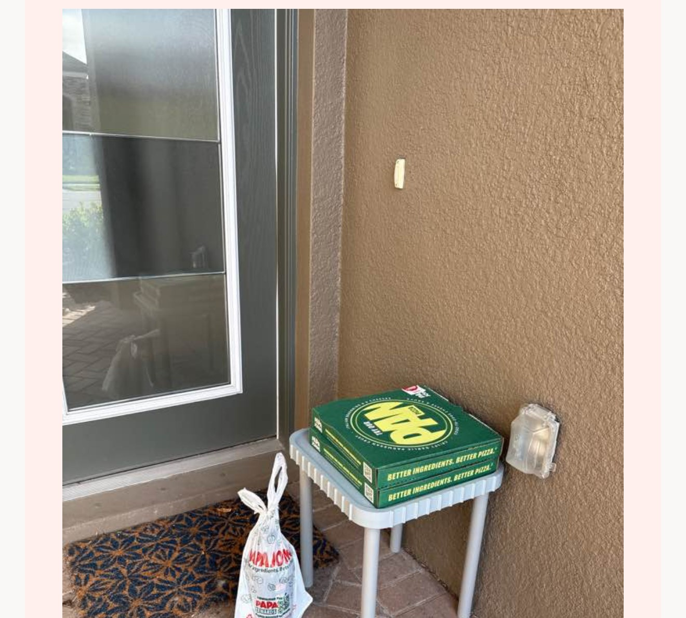
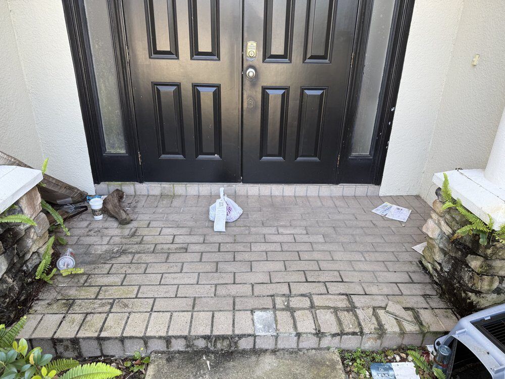
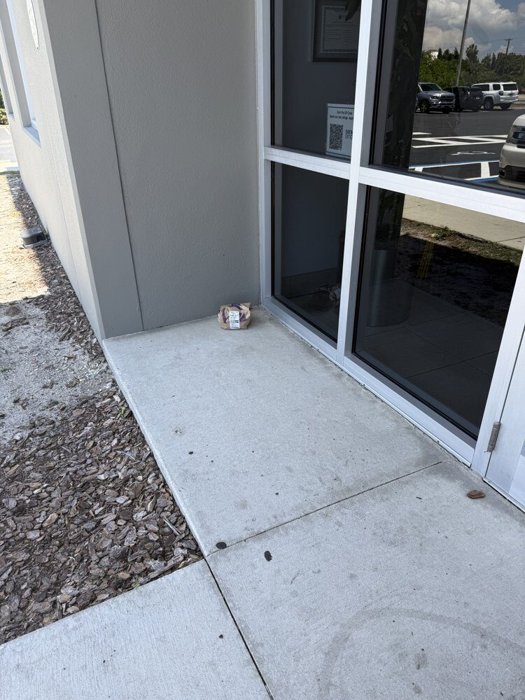
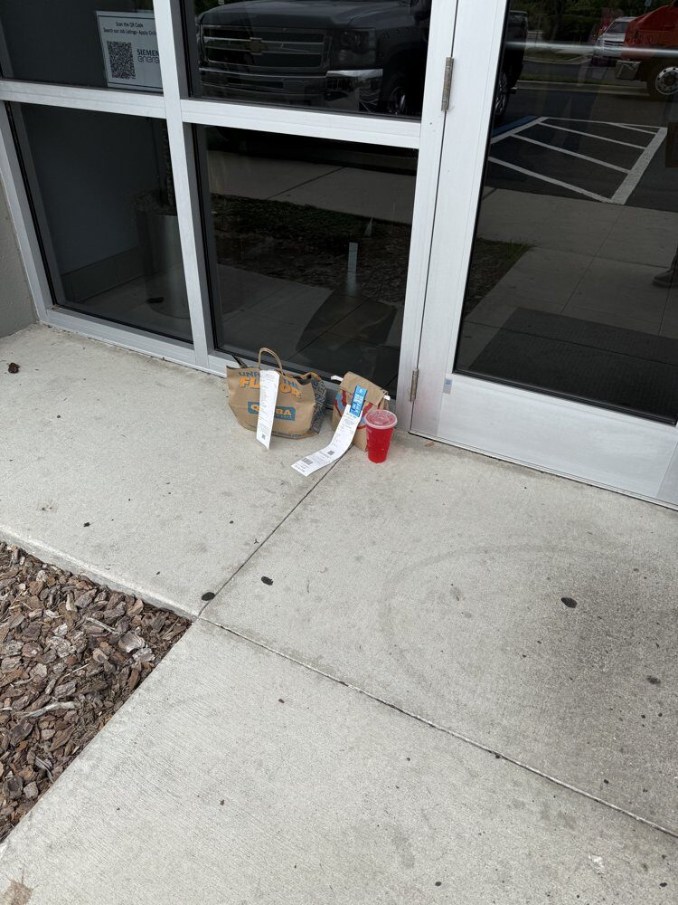
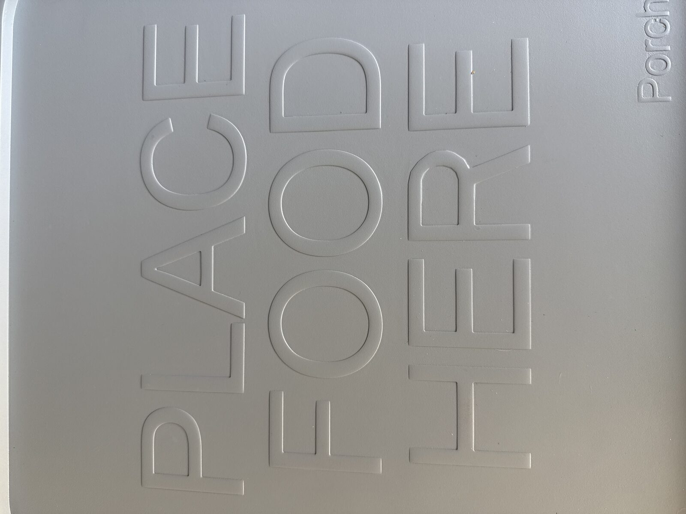

This is what we've learned about where your food actually lands: the data, the footage, and the thing we eventually built so the next bag doesn't end up on the ground.
The $25 Classic tier won't last. It's the lowest price during this campaign. Once it's gone, the price goes up for the rest of the launch.

Homecrux, on the low-tech fix they didn't expect from a former DoorDash driver.
Read the feature →Delivery stopped being an occasional treat a while ago. It's now a daily operation with its own logistics problems, most of which end at your doormat.
orders placed on DoorDash in a single quarter, up 27% year over year.
of deliveries get coded "Leave at Door," according to our own interviews with active Dashers. No handoff. No table. Just a spot that has to be picked.
orders happen on DoorDash every single day. Some land on a PorchDrop. Most still land on the ground.
A new one every day, straight from the front seat. No theme, no agenda, just whatever stood out.
Loading today's observation...
Unedited observations, recorded between deliveries by our founder, Russ, currently sitting at around 2,000 drops and counting.
No stock photos, no renders. Real deliveries, logged exactly as they happened.



Russ started DoorDashing for some extra income between roles. On the very first run, the app said "leave at door." There was no door-adjacent anywhere to leave it, just concrete. He didn't love that. Neither did anyone else, it turned out.
Read the full story →
Designed with one job: give every driver an obvious, clean place to set things down: off the ground, off the mat, away from whatever's living in the mulch.
We're a few weeks out from relaunching. Leave your email and we'll let you know the moment backing opens, no spam, just the launch date.
That's the whole bet, and it's why we're showing real Ring footage instead of a 3D render. The raised "PLACE FOOD HERE" marker gives drivers an obvious, unambiguous spot, which is exactly what they're looking for in the ten seconds they spend at your door.
You can, but most porch furniture isn't built to live outside year-round, sit at the right drop height, or survive up to 75 lbs of someone's entire Costco order. PorchDrop is purpose-built for exactly this one job.
A weatherproof, easy-clean material chosen specifically to hold up to sun, rain, and daily use without breaking down. Not your average plastic patio table.
No, it's just as useful for Amazon packages, groceries, and anything else that currently lands on your porch floor. Leave it out and it becomes the default drop spot for everything.
It has a tabletop. We never claimed otherwise.
The difference is that PorchDrop wasn't designed as patio furniture. Every dimension, material, and feature was chosen for one purpose: creating a dedicated destination for deliveries.
The goal was never to invent the first table. The goal was to create the first table designed specifically for modern deliveries.
No. We filed a patent application covering the specific design we created, not the general idea of a table. Patents protect new designs and innovations within existing product categories every day.
PorchDrop is our approach to solving a familiar problem with a thoughtful design.
Because we've accepted it for years, not because it's the best solution. Every day, millions of meals, groceries, and packages are placed directly on porches, sidewalks, and entryways.
We simply asked a different question: What if there were a better place?
PorchDrop wasn't designed to stop with a tabletop. It was designed as a platform.
The Classic is just the beginning. Future accessories are already being developed, including:
Our goal was to create a product that grows over time instead of remaining a single-purpose table.